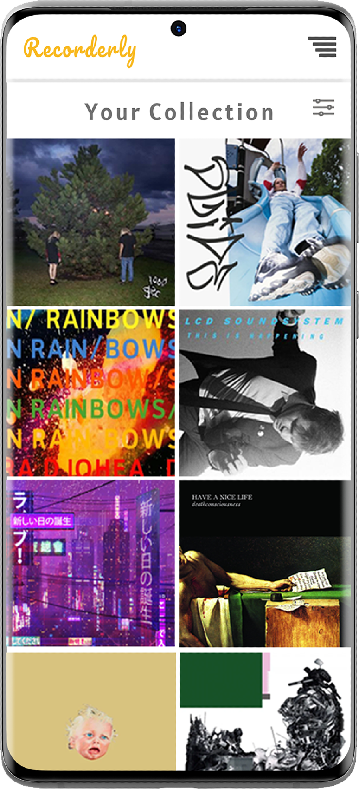
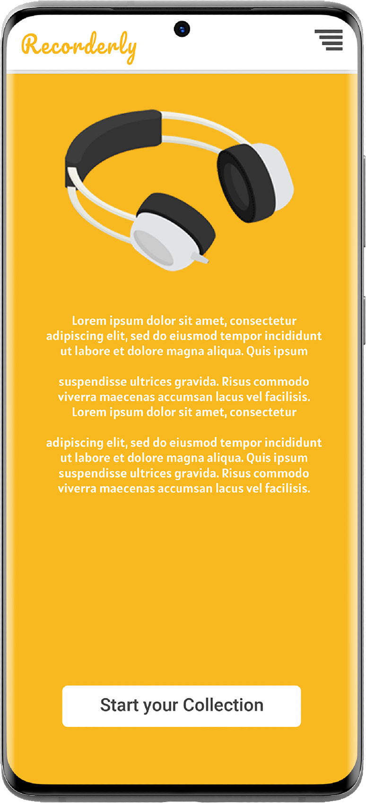
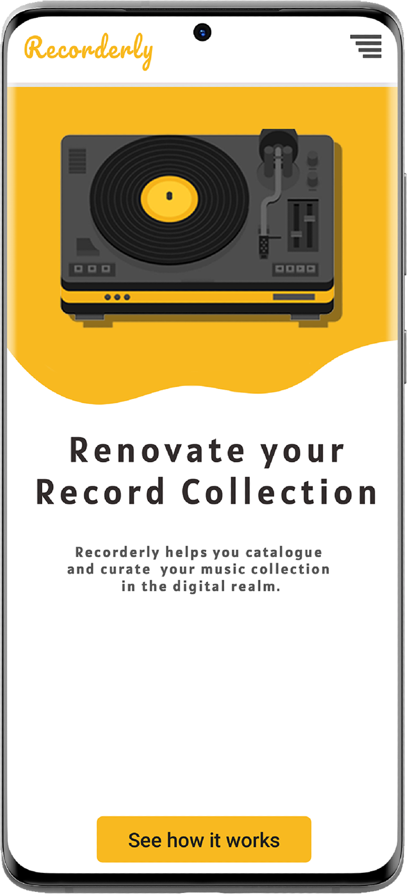

The perfect tool to keep track of your music collection.
Introduction
After building my first single page application (Honda Performance Center), I was overwhelmed by the overall complexity of the project. Whilst the site I had built was functional, truth be told - I didn't really understand how all of these different components worked together. The aim when developing Recorderly was to delve back in to the world of SPAs and build something bigger and better.
Overview
Recorderly is a site where users can organise and manage their physical music collection. The idea is simple: Users search for releases they own, add them to their collection in the correct format (usually Vinyl, Casette or CD) and share with their friends via QR code or URL. Users can also add items to their wishlist whilst browsing.



Design
The early design drafts for Recorderly took inspiration from popular music streaming and database sites such as Discogs and Spotify. Discogs has a powerful, user updated database with almost any release you could ask for. Depsite this, its user interface design is somewhat outdated, visually unappealing and tricky to navigate at times.
When developing Recorderly's aesthetic, I took inspiration from the isometric style of art found in many modern website designs. However, instead of limiting my design to only isometric iconography, I chose to go with a vector-art style (often found in isometric designs) with blocky colours and simple drawings.
There is a vast range of SVG images in this style online, so I had the luxury of being very picky with them.
Technical
The API
I would utilise the Discogs API in the building of my app as it is fast, reliable and contains all the data I could ask for. The highly customisable search endpoint would come in useful for the majority of my data acquisition. I chose to filter the results to 'master release' only, as Discogs stores data for every iteration of a release and would display many duplicates of most releases as a result. This also automatically filtered out Artists, as Recorderly would only search for actual releases.
From here, I trimmed down the returned JSON data, as it contained a bunch of unnecessary keys, as well as data which could easily vary between fetch’s (i.e. any data related to the Discogs marketplace). This is also a necessary step in storing the user data, as the mongoose $pull operator requires an exact duplicate of the data to remove.
Storing the user data
The user collection is a relatively simple undertaking. Utilising Mongo's own Atlas service for hosting, each user's collection and wishlist is stored as an array of JavaScript objects. The schema is as follows:
"user_collection": [
"object": {
"collectionObj": {
"id",
"artistName",
"cover_image",
"discogsURL",
"genre",
"label",
"style",
"title",
"year"
},
"format": "*release format as string*"
},
]
My backend API was built on Node.js and Express, with Mongoose used to keep database connection simple. API endpoints were set up for typical CRUD operations and user authentication was done via JWT. Mongoose $pull and $push operations are used to add/remove data from the collection and wish list arrays.
Retrieving the user data
Retrieving the user's collection and wishlist was another challenge in itself. The Discogs API provides no method for getting multiple release IDs in one operation (understandable, as the data is non-relational). For my first workaround, I looped through the user's collection array one by and create objects for each, stored these objects in an array, rendering these objects in the DOM and finally animating each object into view using anime.js.
Whilst this worked fine for a small collection, larger collections wouldn't complete as too many API calls were being sent to the Discogs API, timing the app out.
My solution was to store the full collection data in my own database for each release as they are added. Whilst I would have preferred to store only item ID's in each user's collection field, it was simply not possible due to the limitations of the Discogs API. At the same time, this reduces the number of different external API calls to only one, improving stability.
Caching

![]()